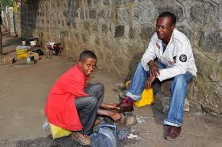
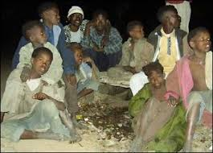

Designed by NEBYU
I am Student
I’m Student in Addis Ababa universty in ITSC dipartement as IT Student. from this class I lorn a lot of courses and that also help me to work some works by my
self, like website desining, app ddevoloping, and also i am Teacher in National collage.......
I love to learn and I continually seek to understand the world I live in. I like to read about history, sociology, politics,
philosophy, business, finance, and anything related to maximising human potential. You can find out about some of my favourite books here.
This
is my personal website where I plan to write about the things I’m interested in, share what I’m learning and give updates on the interesting work and projects I’m involved in. You can also hire me to help you, your team, or
your organisation to solve a problem or improve your performance.
I am Teacher
I’m Acounting and Computer Sience Teacher in Quense Collage for 6 mounths and for now i am Computer sience Teacher in National Collage at mixico from 2019 to now.
I am Manager
I love variety and novel challenges, and I love to solve problems and get things done, so I decided to start using my skills in new ways by learning manegement in Reft-Vally universty, then i gate my 1st dgree on manegement.I worked as a Manager in Rakan Busines Moll for 1 year's and 6 mounths. I work for Show Supermarket as Store Manager for 6 mounths.
Social Workings

social work in addis ababa
I am work some Social works by my own self. i work this on Street Childs around Addis Ababa. I start this work from 2017 to now. From the Starting to now I pick 62 street childes and help them to work by them self help them to be students and thinks to God all of them are good worker and some of them are a good worker and a good student. Right now Iam working with some students to pick one stree child who is pregnanted.And we alredy pic her by giving home to her. right now she gate birth and she is fine with her child ......for more informetion Link1 , Link2

social work in addis ababa